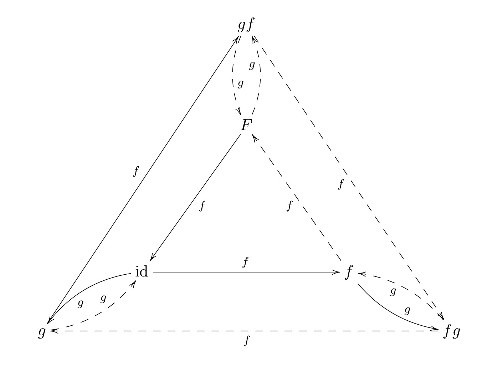

The identities among the relators for a finitely presented group G are constructed as logged module polynomials. The procedure, described in [HW03] and based on work in [BRS99], is to construct a full set of group relator sequences for the group; convert these into module polynomials (eliminating empty sequences); and then apply simplification rules (including the primary identity property) to eliminate obvious duplicates and conjugates.
When a reduced set of polynomials has been obtained, the relator sequences from which they were formed are returned as the identities among relators for G.
‣ RootIdentities( grp ) | ( attribute ) |
‣ RootPositions( grp ) | ( attribute ) |
The root identities of G are identities of the form R^-1R^w where R = w^n is a proper power relator and n>1. (For equivalent forms invert, or permute the factors cyclically, or act with w^-1.)
For S_3 = ⟨ f,g ~|~ ρ=f^3, σ=g^2, τ=(fg)^2 ⟩ all three relators are proper powers: [1 ≡ ρ=f^3, 2 ≡ σ=g^2, 3 ≡ τ=(fg)^2]. So the root identities are ρ^-1 ρ^a, σ^-1 σ^b and τ^-1 τ^ab.
For Q_8 = ⟨ a,b ~|~ q=a^4, r=b^4, s=abab^-1, t=a^2b^2 ⟩ only two of the four relators are proper powers, so the root identities are q^-1 q^a and r^-1 r^b.
In the example we see that the attribute RootIdentities returns a list which includes R^-1R^w^-1} as well as R^-1R^w. Relator ρ^-1ρ^f is stored as [[-1,id],[1,f]], etc.
The RootPositions attribute is a boolean list specifying which of the relators are proper powers.
gap> roots3 := RootIdentities(s3); [ [ [ -1, <identity ...> ], [ 1, s3_M1 ] ], [ [ -1, <identity ...> ], [ 1, s3_M3 ] ], [ [ -2, <identity ...> ], [ 2, s3_M2 ] ], [ [ -2, <identity ...> ], [ 2, s3_M4 ] ], [ [ -3, <identity ...> ], [ 3, s3_M1*s3_M2 ] ], [ [ -3, <identity ...> ], [ 3, s3_M4*s3_M3 ] ] ] gap> RootPositions(s3); [ true, true, true ] gap> PrintLnUsingLabels( RootIdentities(q8), genfmq8, q8labs ); [ [ [ -1, id ], [ 1, a ] ], [ [ -1, id ], [ 1, A ] ], [ [ -2, id ], [ 2, b ] ], [ [ -2, id ], [ 2, B ] ] ] gap> RootPositions(q8); [ true, true, false, false ]
‣ IdentityRelatorSequences( grp ) | ( attribute ) |
To construct the identity relator sequences for a group G we apply each relator R at each non-identity element x, reducing the resulting words using the logged rewrite system.
With the s3 example, the monoid presentation has generators {f,g,F,G} and relators
[~ fF,~ gG,~ Ff,~ Gg,~ f^3,~ g^2,~ (fg)^2 ~]\ ,
and the elements are { id, f, g, F, fg, gf}. The logged rewriting system has relations
| f^-1 = F, quad g^-1 = [-2, id]g, quad F^-1 = f, quad G^-1 = g, quad G = [-2,id]g, |
| fF = id, quad g^2 = [2, id] id, quad Ff = id, quad f^2 = [1, id]F, quad F^2 = [-1, id]f, |
| gF = [-3, id][2,FGF]fg, quad Fg = [-3,f][2,FG]gf, |
| fgf = [-2,FGF][3, id]g, quad gfg = [3,f]F |
Here is the Cayley graphs of S_3, with the solid arrows forming the spanning tree:  Applying R = τ = (fg)^2 at x = f gives the cycle (top right-hand quadrilateral):
f \stackrel{f}{\longrightarrow} F \stackrel{g}{\longrightarrow} gf \stackrel{f}{\longrightarrow} fg \stackrel{g}{\longrightarrow} f\ .
Each of these edges has a non-trivial logged rewrite, particularly the third edge where gff -> gF -> fg. Combining this log information we obtain:
[\tau,F]\,f ~=~ f.\tau ~=~ [1,{\rm id}].[-3,f][2,FG].[1,G][-3,{\rm id}][2,FGF].[2,F]\,f .
Expanding [1, id][-3,f][2,FG][1,G][-3, id][2,FGF][2,F][-3,F] gives
fff.FGFGFf.gfggFG.gfffG.GFGF.fgfggFGF.fggF.fGFGFF
which cancels to the identity, as expected. Converting this back to the group presentation, we obtain the fourth identity given in the introduction (1.1):
\iota_{(\tau,f)} ~=~ \rho\ (\tau^{-1})^f\ \sigma^{FG}\ \rho^G\ (\tau^{-1})\ \sigma^{FGF}\ \sigma^F\ (\tau^{-1})^F\, .
The operation IdentityRelatorSequences returns a list which omits any duplicates or empty lists. For the s3 example, all of the possible 5*3 = 15 sequences are added to the root identities.
gap> ms3 := MonoidPresentationFpGroup( s3 );; gap> fms3 := FreeGroupOfPresentation( ms3 );; gap> genfms3 := GeneratorsOfGroup(fms3 );; gap> s3labs := ["f","g","F","G"];; gap> SetMonoidPresentationLabels( ms3, s3labs );; gap> idss3 := IdentityRelatorSequences( s3 );; gap> lenidss3 := Length( idss3 ); 17 gap> List( idss3, L -> Length(L) ); [ 2, 2, 2, 2, 2, 2, 2, 2, 2, 2, 2, 2, 4, 4, 6, 8, 8 ] gap> for i in [1..Length(idss3)] do > PrintLnUsingLabels( idss3[i], genfms3, s3labs ); > od; [ [ -3, id ], [ 3, f*g ] ] [ [ -3, id ], [ 3, G*F ] ] [ [ -2, id ], [ 2, g ] ] [ [ -2, id ], [ 2, G ] ] [ [ -1, id ], [ 1, f ] ] [ [ -1, id ], [ 1, F ] ] [ [ 1, id ], [ -1, f ] ] [ [ 1, id ], [ -1, F ] ] [ [ 1, G ], [ -1, F*G ] ] [ [ 2, id ], [ -2, G ] ] [ [ 2, F ], [ -2, G*F ] ] [ [ 3, f ], [ -3, G ] ] [ [ -3, f ], [ 2, F*G ], [ 3, f ], [ -2, f ] ] [ [ -2, F*G*F ], [ 3, id ], [ 2, id ], [ -3, G*F ] ] [ [ -2, F*G*F ], [ 3, id ], [ 1, G ], [ -3, id ], [ 2, F*G*F ], [ -1, G*F ] ] [ [ 1, id ], [ -3, f ], [ 2, F*G ], [ 1, G ], [ -3, id ], [ 2, F*G*F ], [ 2, F ], [ -3, F ] ] [ [ 1, G ], [ -3, id ], [ 2, F*G*F ], [ 2, F ], [ 1, id ], [ -3, f ], [ 2, F*G ], [ -3, F*G ] ]
‣ LogSequenceLessThan( J, K ) | ( operation ) |
This is an operation used to sort lists of identity sequences. First the lengths of sequences J, K are compared. If the lengths are equal then the sequences are compared as lists. The list idss3 is sorted using this function.
gap> LogSequenceLessThan( idss3[7], idss3[8] ); true
‣ ExpandLogSequence( mG, L ) | ( operation ) |
This operation takes a log sequence L, writes each term as a conjugate of a relator, takes the product of all of these, and then cancels consecutive inverse generators to return a word in the free group of the presentation. This is precisely what we did by hand with ι_(τ,f) on the previous page. If the sequence is an identity sequence the identity element should be returned, so this provides a useful check.
gap> ExpandLogSequence( ms3, idss3[17] ); <identity ...>
We now return to the example considered in section 1.1. In the previous section we have constructed 17 identity sequences, and we now wish to reduce this number to find a minimal set.
‣ ReduceLogSequences( G, ids ) | ( operation ) |
This operation applies a collection of operations, which will be described in the following section, to reduce the list idss3 from 17 to 5 identities.
gap> ridss3 := ReduceLogSequences( s3, idss3 );; gap> lenridss3 := Length( ridss3 ); 5 gap> for i in [1..lenridss3] do > PrintLnUsingLabels( ridss3[i], genfms3, s3labs ); > od; [ [ -3, id ], [ 3, f*g ] ] [ [ -2, id ], [ 2, g ] ] [ [ -1, id ], [ 1, f ] ] [ [ 1, id ], [ -3, f ], [ 2, F*G ], [ 1, G ], [ -3, id ], [ 2, F*G*F ], [ 2, F ], [ -3, F ] ] [ [ 1, id ], [ -3, g ], [ 2, F*G*F*g ], [ 2, F*g ], [ 1, g ], [ -3, id ], [ 2, F ], [ -3, F ] ]
We wish to show that the fifth of these identities is a combination of the first four. Recall that the fourth identity was obtained by applying R = τ = (fg)^2 at x = f. The fifth comes from applying R = τ at x = gf, so this is the same cycle but with a different start point.
‣ ConjugateByWordLogSequence( mG, K, w ) | ( operation ) |
This operation conjugates every term in a log sequence by a word in the generators. In the example we conjugate the fifth identity K5 by G. It then becomes apparent that the fourth identity K4 has the form [ A, B, [ -3, F ] ] while K5 has the form [ B, A, [ -3, FG ] ], where the F and the GF are the inverses of the vertices where the cycle starts.
gap> K4 := ShallowCopy( ridss3[4] );; gap> PrintLnUsingLabels( K4, genfms3, s3labs ); [ [ 1, id ], [ -3, f ], [ 2, F*G ], [ 1, G ], [ -3, id ], [ 2, F*G*F ], [ 2, F ], [ -3, F ] ] gap> L5 := ShallowCopy( ridss3[5] );; gap> K5 := ConjugateByWordLogSequence( ms3, L5, genfms3[4] );; gap> PrintLnUsingLabels( K5, genfms3, s3labs ); [ [ 1, G ], [ -3, id ], [ 2, F*G*F ], [ 2, F ], [ 1, id ], [ -3, f ], [ 2, F*G ], [ -3, F*G ] ] gap> A := K4{[1..3]};; gap> PrintLnUsingLabels( A, genfms3, s3labs ); [ [ 1, id ], [ -3, f ], [ 2, F*G ] ] gap> B := K4{[4..7]};; gap> PrintLnUsingLabels( B, genfms3, s3labs ); [ [ 1, G ], [ -3, id ], [ 2, F*G*F ], [ 2, F ] ] gap> PositionSublist( K5, A ); 5 gap> PositionSublist( K5, B ); 1
‣ ChangeStartLogSequence( mon, K, p ) | ( operation ) |
The start point of an identity log sequence can be chosen at random (since every conjugate of an identity is that identity). This operation permutes a given sequence K so as to start at the p-th position.
In our example we wish to show that K4 and K5 are equivalent up to root identities. To do this we first replace K4 by J4 = [ B, [ -3, F ], A ].
gap> J4 := ChangeStartLogSequence( ms3, K4, 4 );; gap> PrintLnUsingLabels( J4, genfms3, s3labs ); [ [ 1, G ], [ -3, id ], [ 2, F*G*F ], [ 2, F ], [ -3, F ], [ 1, id ], [ -3, f ], [ 2, F*G ] ]
‣ InverseLogSequence( K ) | ( operation ) |
To invert a log sequence we reverse the order of the terms and replace each [m,w] by [-m,w].
We continue our example by replacing J4 by its inverse.
gap> J4 := InverseLogSequence( J4 );; gap> PrintLnUsingLabels( J4, genfms3, s3labs ); [ [ -2, F*G ], [ 3, f ], [ -1, id ], [ 3, F ], [ -2, F ], [ -2, F*G*F ], [ 3, id ], [ -1, G ] ]
‣ CancelImmediateInversesLogSequence( K ) | ( attribute ) |
‣ CancelInversesLogSequence( mG, K ) | ( operation ) |
Concatenating J4 and K5, we get [ A^-1, [ 3, F ], B^-1, B, A, [ -3, FG ] ], with length 16. Cancelling immediate inverses removes the [ B^-1, B ]. Cancelling inverses gets rid of the terms a^-1 and A, converting [ 3, F ] into [ 3, fgFG ] = [ 3, FG ]. Conjugating with gf produces the third root identity [ [ 3, fg ], [ -3, id ] ], which then cancels.
gap> J4K5 := Concatenation( J4, K5 );; gap> J4K5 := CancelImmediateInversesLogSequence( J4K5 );; gap> PrintLnUsingLabels( J4K5, genfms3, s3labs ); [ [ -2, F*G ], [ 3, f ], [ -1, id ], [ 3, F ], [ 1, id ], [ -3, f ], [ 2, F*G ], [ -3, F*G ] ] gap> J4K5 := CancelInversesLogSequence( ms3, J4K5 ); [ ]
In this section we list some further operations which may be used to simplify the list of identities returned by IdentityRelatorSequences. We will use our Q_8 presentation in the examples.
gap> mq8 := MonoidPresentationFpGroup( q8 );; gap> fmq8 := FreeGroupOfPresentation( mq8 );; gap> genfmq8 := GeneratorsOfGroup(fmq8 );; gap> q8labs := ["a","b","A","B"];; gap> SetMonoidPresentationLabels( mq8, q8labs );; gap> idsq8 := IdentityRelatorSequences( q8 );; gap> lenidsq8 := Length( idsq8 ); 28 gap> List( idsq8, L -> Length(L) ); [ 2, 2, 2, 2, 2, 2, 2, 4, 4, 4, 4, 4, 4, 4, 4, 4, 5, 5, 5, 6, 6, 7, 8, 8, 8, 9, 10, 10 ]
‣ LogSequenceRewriteRules( mG ) | ( attribute ) |
The root identity R^-1R^w may be converted into the rewrite rule R^w -> R.
gap> rulesq8 := LogSequenceRewriteRules( mq8 );; gap> for i in [1..8] do > PrintLnUsingLabels( rulesq8[i], genfmq8, q8labs ); > od; [ [ 1, a ], [ 1, id ] ] [ [ -1, a ], [ -1, id ] ] [ [ 1, A ], [ 1, id ] ] [ [ -1, A ], [ -1, id ] ] [ [ 2, b ], [ 2, id ] ] [ [ -2, b ], [ -2, id ] ] [ [ 2, B ], [ 2, id ] ] [ [ -2, B ], [ -2, id ] ] [ [ 3, a*b*a*B ], [ 3, id ] ] [ [ 3, b*A*B*A ], [ 3, id ] ] [ [ -3, a*b*a*B ], [ -3, id ] ] [ [ -3, b*A*B*A ], [ -3, id ] ] [ [ 4, a^2*b^2 ], [ 4, id ] ] [ [ 4, B^2*A^2 ], [ 4, id ] ] [ [ -4, a^2*b^2 ], [ -4, id ] ] [ [ -4, B^2*A^2 ], [ -4, id ] ]
‣ OnePassReduceLogSequence( J, rules ) | ( operation ) |
The rewrite rules returned by LogSequenceRewriteRules may be used to simplify other identity sequences. In the example the fourth rule (q^-1)^A -> q^-1, applied twice, reduces (q^-1)^A^2 to q^-1.
gap> J7 := idsq8[7]; [ [ 1, <identity ...> ], [ -1, q8_M3^2 ] ] gap> OnePassReduceLogSequence( J7, rulesq8 ); [ [ 1, <identity ...> ], [ -1, <identity ...> ] ]
The operation ReduceLogSequences, described in subsection 6.2-1, applied to the list idsq8 reduces the 28 identities to 15.
gap> ridsq8 := ReduceLogSequences( q8, idsq8 );; gap> lenrids := Length( ridsq8 ); 15 gap> for i in [1..lenrids] do > PrintLnUsingLabels( ridsq8[i], genfmq8, q8labs ); > od; [ [ -2, id ], [ 2, b ] ] [ [ -1, id ], [ 1, a ] ] [ [ -4, id ], [ 2, A^2 ], [ 1, id ], [ -4, a^2 ] ] [ [ -4, id ], [ 3, A ], [ 4, a ], [ -3, b ] ] [ [ 1, id ], [ -4, id ], [ 2, A^2 ], [ -4, A^2 ] ] [ [ -4, id ], [ 3, A ], [ 3, id ], [ 2, id ], [ -4, b ] ] [ [ -3, id ], [ 4, B*A ], [ -4, A ], [ 1, id ], [ -3, a ] ] [ [ -3, id ], [ 4, B*A ], [ -4, A^2 ], [ 1, id ], [ -3, B ] ] [ [ -4, id ], [ 3, A ], [ -4, A ], [ 2, A^3 ], [ 1, id ], [ -3, b ] ] [ [ -4, id ], [ 4, B*A^2 ], [ -4, A^2 ], [ 1, id ], [ 2, id ], [ -4, b ] ] [ [ -3, id ], [ 4, B*A ], [ -4, A ], [ 3, A^2 ], [ 4, id ], [ -4, B ] ] [ [ -4, id ], [ 3, A ], [ 4, B*A ], [ -4, A ], [ 1, id ], [ -3, a ], [ 4, B ], [ -1, b ] ] [ [ -3, id ], [ 4, B*A ], [ -4, A ], [ 3, A^2 ], [ 4, B*A^2 ], [ -4, A^2 ], [ 1, id ], [ -1, B ] ] [ [ 4, id ], [ -4, b ], [ 1, b ], [ -3, a^2*b ], [ 4, B*a*b ], [ -4, a*b ], [ 3, b ], [ -1, id ] ] [ [ -3, id ], [ 4, B*A ], [ -4, A ], [ 1, id ], [ -4, a ], [ 2, A ], [ 1, id ], [ -4, a^2 ], [ -3, B ] ]
We now demonstrate that this list may be reduced further.
‣ MoveRightLogSequence( mG, J, L, q ) | ( operation ) |
‣ MoveLeftLogSequence( mG, J, L, q ) | ( operation ) |
‣ SwapLogSequence( mG, J, p, q ) | ( operation ) |
The terms in an identity sequence may be interchanged because
R^w Q^v ~=~ Q^v R^{wQ^v} ~=~ Q^{v(R^w)^{-1}} R^w.
In the first two of these three operations L = [p..r] is a range specifying a sublist K=J{[p..r]} of J, and l is the length of J. The operation MoveRightLogSequence(mG,J,L,q), with 0 < p < q and q+r ≤ p+l, moves sublist K to the q-th position, conjugating entries in J{[p+1 ... q]} and moving them all to the left.
Similarly MoveLeftLogSequence(mG,J,L,q), with 0 < q < p nd r ≤ l, moves sublist K to the q-th position, conjugating entries in J{[q ... p-1]} and moving them all to the right.
The operation SwapLogSequence(mG,J,p,q) with p < q swaps a pair of terms in a sequence J by calling the two previous commands.
In all three operations the procedure is completed by a call to OnePassReduceLogSequence.
In the example the third identity is converted into the fifth by moving the third term one place right and then changing the start position, so it may be omitted.
gap> J3 := ShallowCopy( ridsq8[3] );; gap> PrintLnUsingLabels( J3, genfmq8, q8labs ); [ [ -4, id ], [ 2, A^2 ], [ 1, id ], [ -4, a^2 ] ] gap> K3 := MoveRightLogSequence( mq8, J3, [3], 4 );; gap> PrintLnUsingLabels( K3, genfmq8, q8labs ); [ [ -4, id ], [ 2, A^2 ], [ -4, A^2 ], [ 1, id ] ] gap> J5 := ShallowCopy( ridsq8[5] );; gap> PrintLnUsingLabels( J5, genfmq8, q8labs ); [ [ 1, id ], [ -4, id ], [ 2, A^2 ], [ -4, A^2 ] ] gap> J5 = ChangeStartLogSequence( mq8, K3, 4 ); true
‣ SubstituteLogSubsequence( mG, K, J1, J2 ) | ( operation ) |
If we move the second term in J5 to the right, we find that sublist U = [[1,id],[2,id]] is equal to V = [[4,A^2],[4,id]], with both expanding to a^4b^4.
Now U appears in the tenth identity, and if we replace it with V and then cancel, we obtain the empty list. So the tenth identity may be omitted.
gap> K5 := MoveRightLogSequence( mq8, J5, [2], 3 );; gap> PrintLnUsingLabels( K5, genfmq8, q8labs ); [ [ 1, id ], [ 2, id ], [ -4, id ], [ -4, A^2 ] ] gap> K5a := K5{[1..2]};; gap> K5b := InverseLogSequence( K5{[3..4]} );; gap> K5a;K5b; [ [ 1, <identity ...> ], [ 2, <identity ...> ] ] [ [ 4, q8_M3^2 ], [ 4, <identity ...> ] ] gap> J10 := ShallowCopy( ridsq8[10] );; gap> PrintLnUsingLabels( J10, genfmq8, q8labs ); [ [ -4, id ], [ 4, B*A^2 ], [ -4, A^2 ], [ 1, id ], [ 2, id ], [ -4, b ] ] gap> K10 := SubstituteLogSubsequence( mq8, J10, K5a, K5b );; gap> PrintLnUsingLabels( K10, genfmq8, q8labs ); [ [ -4, id ], [ 4, B*A^2 ], [ -4, A^2 ], [ 4, A^2 ], [ 4, id ], [ -4, b ] ] gap> CancelInversesLogSequence( mq8, K10 ); [ ]
Similarly, we may reduce the ninth identity. Initially, U does not appear as a sublist of J9. Swapping the fourth and fifth terms and conjugating by A produces U, which is then replaced by V. After a cancellation, we obtain a conjugate of the fourth identity.
gap> J9 := ShallowCopy( ridsq8[9] );; gap> PrintLnUsingLabels( J9, genfmq8, q8labs ); [ [ -4, id ], [ 3, A ], [ -4, A ], [ 2, A^3 ], [ 1, id ], [ -3, b ] ] gap> K9 := MoveLeftLogSequence( mq8, J9, [5], 4 );; gap> PrintLnUsingLabels( K9, genfmq8, q8labs ); [ [ -4, id ], [ 3, A ], [ -4, A ], [ 1, id ], [ 2, a ], [ -3, b ] ] gap> L9 := ConjugateByWordLogSequence( mq8, K9, genfmq8[3] );; gap> PrintLnUsingLabels( L9, genfmq8, q8labs ); [ [ -4, A ], [ 3, A^2 ], [ -4, A^2 ], [ 1, id ], [ 2, id ], [ -3, b*A ] ] gap> M9 := SubstituteLogSubsequence( mq8, L9, K5a, K5b);; gap> PrintLnUsingLabels( M9, genfmq8, q8labs ); [ [ -4, A ], [ 3, A^2 ], [ -4, A^2 ], [ 4, A^2 ], [ 4, id ], [ -3, b*A ] ] gap> N9 := CancelInversesLogSequence( mq8, M9 );; gap> PrintLnUsingLabels( N9, genfmq8, q8labs ); [ [ -4, A ], [ 3, A^2 ], [ 4, id ], [ -3, b*A ] ] gap> P9 := ConjugateByWordLogSequence( mq8, N9, genfmq8[1] );; gap> PrintLnUsingLabels( P9, genfmq8, q8labs ); [ [ -4, id ], [ 3, A ], [ 4, a ], [ -3, b ] ] gap> P9 = ridsq8[4]; true
We will not, for now, attempt to reduce the list of identities further.
This section describes the approach used from the earliest versions of IdRel up to version 2.38 in 2017. For version 2.39 the methods were revised so as to produce some data for infinite groups. This experimental work is described in later sections.
‣ IdentitiesAmongRelators( grp ) | ( attribute ) |
It is not guaranteed that a minimal set of identities is obtained. For q8 a set of seven identities is returned, whereas a minimal set contains only six. See Example 5.1 of [HW03] for further details.
Why idrelq8 in the following example is shorter than ridsq8 above remains to be investigated!
gap> idrelq8 := IdentitiesAmongRelators( q8 );; gap> Length( idrelq8 ); 14 gap> for i in [1..14] do > PrintLnUsingLabels( idrelq8[i], genfmq8, q8labs ); > od; [ [ -1, id ], [ 1, a ] ] [ [ -2, id ], [ 2, b ] ] [ [ -4, id ], [ 3, A ], [ 3, id ], [ 2, id ], [ -4, b ] ] [ [ -4, id ], [ 2, A^2 ], [ 1, id ], [ -4, a^2 ] ] [ [ 1, id ], [ -4, id ], [ 2, A^2 ], [ -4, A^2 ] ] [ [ -3, id ], [ 4, B*A ], [ -4, A ], [ 1, id ], [ -3, a ] ] [ [ -4, id ], [ 3, A ], [ 4, a ], [ -3, b ] ] [ [ -3, id ], [ 4, B*A ], [ -4, A^2 ], [ 1, id ], [ -3, B ] ] [ [ -4, id ], [ 4, B*A^2 ], [ -4, A^2 ], [ 1, id ], [ 2, id ], [ -4, b ] ] [ [ -3, id ], [ 4, B*A ], [ -4, A ], [ 3, A^2 ], [ 4, id ], [ -4, B ] ] [ [ -4, id ], [ 3, A ], [ -4, A ], [ 2, A^3 ], [ 1, id ], [ -3, b ] ] [ [ -3, id ], [ 4, B*A ], [ -4, A ], [ 1, id ], [ -4, a ], [ 2, A ], [ 1, id ], [ -4, a^2 ], [ -3, B ] ] [ [ -4, id ], [ 3, A ], [ 4, B*A ], [ -4, A ], [ 1, id ], [ -3, a ], [ 4, B ], [ -1, b ] ] [ [ -3, id ], [ 4, B*A ], [ -4, A ], [ 3, A^2 ], [ 4, B*A^2 ], [ -4, A^2 ], [ 1, id ], [ -1, B ] ]
‣ IdentityYSequences( grp ) | ( attribute ) |
These identities are then transformed into module polynomials
\rho(a + ba) + \sigma({\rm id} + ab + ba) - \tau({\rm id} + a + A)\ ,
where the monoid elements are transformed into their normal forms.
The collection of saturated sets of these module polynomials is then reduced as far as possible, and the minimal set obtained returned as the IdentityYSequences of the group. The group relator sequences corresponding to these module polynomials form the IdentitiesAmongRelators for the group.
gap> idyseq8 := IdentityYSequences( q8 );; gap> for y in idyseq8 do > PrintLnYSequence( y, genfmq8, q8labs, genq8R, q8Rlabs ); > od; q8_Y2*(1*A), q^-1*(-1*A) + q*(1*id)) q8_Y1*(1*B), r^-1*(-1*B) + r*(1*id)) q8_Y6*(-1*id), r*(-1*id) + s*(-1*A + -1*id) + t^-1*(1*b + 1*id)) q8_Y3*(-1*a), q*(-1*a) + r*(-1*A) + t^-1*(1*A + 1*a)) q8_Y5*(-1*a), q*(-1*a) + r*(-1*A) + t^-1*(1*A + 1*a)) q8_Y7*(1*a*b), q*(1*a*b) + s^-1*(-1*a*b + -1*B) + t^-1*(-1*b) + t*(1*id)) q8_Y4*(1*A), s^-1*(-1*a*b) + s*(1*a^2) + t^-1*(-1*A) + t*(1*id)) q8_Y8*(1*a*b), q*(1*a*b) + s^-1*(-1*a*b + -1*A) + t^-1*(-1*a*B) + t*(1*id)) q8_Y10*(1*B), q*(1*B) + r*(1*B) + t^-1*(-1*B + -1*b + -1*id) + t*(1*id)) q8_Y11*(1*b), s^-1*(-1*b) + s*(1*B) + t^-1*(-1*a*B + -1*id) + t*(1*b + 1*a)) q8_Y9*(-1*a), q*(-1*a) + r*(-1*a^2) + s^-1*(1*a*B) + s*(-1*id) + t^-1*(1*a + 1*id)) q8_Y15*(1*a*b), q*(2*a*b) + r*(1*b) + s^-1*(-1*a*b + -1*A) + t^-1*(-1*a*B + -1*B + -1*b) + t*(1*id)) q8_Y12*(1*b), q^-1*(-1*a^2) + q*(1*b) + s^-1*(-1*a*b) + s*(1*a*B) + t^-1*( -1*a*B + -1*b) + t*(1*a + 1*id)) q8_Y13*(1*a*b), q^-1*(-1*A) + q*(1*a*b) + s^-1*(-1*a*b) + s*(1*a*B) + t^-1*( -1*a*B + -1*b) + t*(1*a + 1*id))
As we have seen, the procedure for obtaining identities involves applying each relator at each element of the group. Since this will not terminate when the group is infinite, we include an operation to construct words up to a given length in the monoid representation of the group.
‣ PartialElementsOfMonoidRepresentation( G, len ) | ( operation ) |
As an example we take the group ⟨ u,v,w ~|~ u^3, v^2, w^2, (uv)^2, (vw)^2⟩.
gap> F := FreeGroup(3);; gap> u := F.1;; v := F.2;; w := F.3;; gap> rels := [ u^3, v^2, w^2, (u*v)^2, (v*w)^2 ];; gap> q0 := F/rels;; gap> SetArrangementOfMonoidGenerators( q0, [1,-1,2,-2,3,-3] ); gap> SetName( q0, "q0" ); gap> mq0 := MonoidPresentationFpGroup( q0 );; gap> fmq0 := FreeGroupOfPresentation( mq0 );; gap> genfmq0 := GeneratorsOfGroup( fmq0 );; gap> q0labs := ["u","U","v","V","w","W"];; gap> SetMonoidPresentationLabels( mq0, q0labs );; gap> lrws := LoggedRewritingSystemFpGroup( q0 );; gap> pe1 := PartialElementsOfMonoidPresentation( q0, 1 );; gap> PrintLnUsingLabels( pe1, genfmq0, q0labs ); [ id, u, U, v, w ] gap> pe2 := PartialElementsOfMonoidPresentation( q0, 2 );; gap> PrintLnUsingLabels( pe2, genfmq0, q0labs ); [ id, u, U, v, w, u*v, u*w, U*v, U*w, v*w, w*u, w*U ]
generated by GAPDoc2HTML